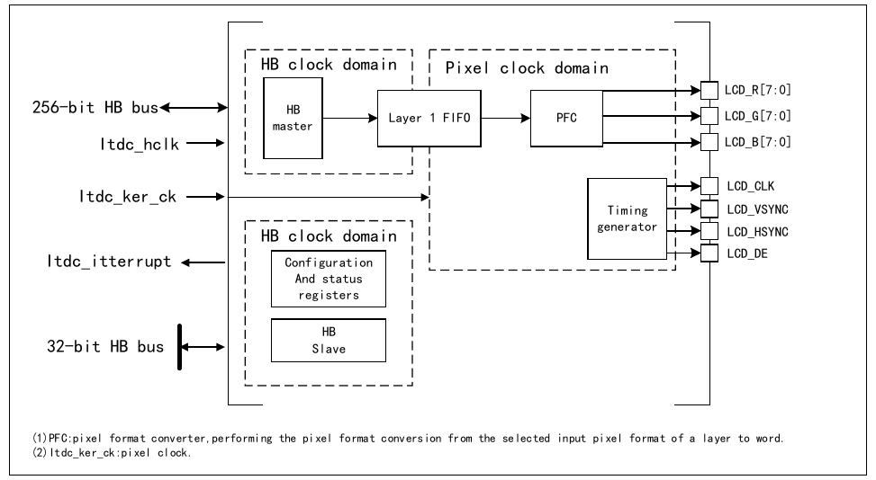
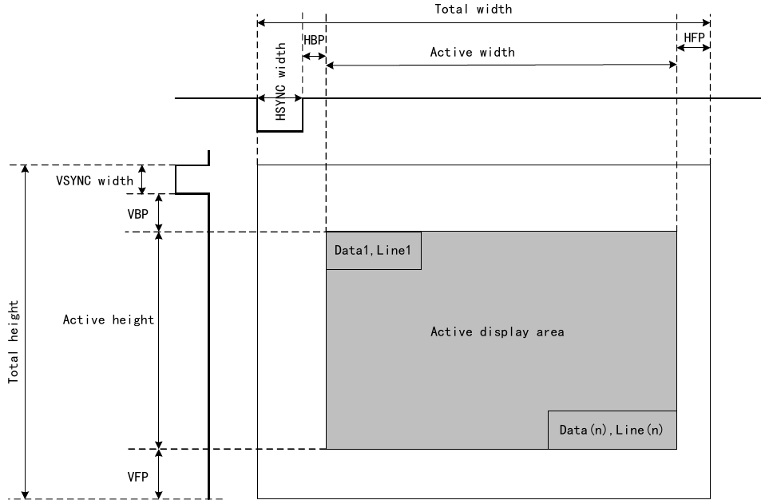

The LCD-TFT (Thin-Film Transistor Liquid Crystal Display) display controller (LTDC) mainly provides parallel digital RGB signals along with horizontal synchronization, vertical synchronization, pixel clock, and data enable signals, which can be used as output signals to various LCD and TFT panel interfaces.

(1) PFC: Pixel Format Converter, performing the pixel format conversion from the selected input pixel format of a layer to word.
(2) ltdc_ker_ck: pixel clock.
The LTDC interface is a synchronous data interface, including pixel clock, pixel data, and horizontal and vertical synchronization signals. Figure 27-2 shows the configurable timing parameters generated by the LTDC synchronous timing generator module.

The synchronous timing configuration example is as follows:
The values programmed in the LTDC timing registers will be:
The programmable pixel format is used for the data stored in the layer's frame buffer. Up to 8 input pixel formats can be configured for each layer via the R32_LTDC_PFCR register.
The ARGB8888 format requires 8 bits per channel (Alpha, Red, Green, and Blue). However, some channels in the ARGB1555 and ARGB4444 formats have fewer than 8 bits. The pixel processing unit converts them to ARGB8888 by copying the most significant bits to fill the least significant bits. When processing RGB888 and RGB565 formats, the pixel processing unit assumes Alpha=255, and if a channel has fewer than 8 bits, it also copies the most significant bits to fill the least significant bits.
The CLUT can be enabled for each layer at runtime via the CLUTEN bit in the R32_LTDC_LCR register. The CLUT only applies to indexed colors when using L8, AL44, and AL88 input pixel formats.
First, the CLUT must be loaded with R, G, and B values to replace the original R, G, and B values of the corresponding pixels (indexed colors). Each color (RGB value) has its own corresponding address within the CLUT. The R, G, and B values and their respective addresses are programmed through the R32_LTDC_LCLUTWR register.
When using L8 and AL88 input pixel formats, the CLUT must be loaded with 256 colors. The address of each color is configured in the CLUTADD bits of the R32_LTDC_LCLUTWR register.
When using the AL44 input pixel format, the CLUT must only be loaded with 16 colors. The address of each color must be filled by repeating the 4-bit L channel to 8 bits, as follows:
Each layer's color frame buffer has a starting address, which is configured through the R32_LTDC_LCFBAR register. When a layer is enabled, data is fetched from the color frame buffer.
Each layer has a configurable total line length (in bytes) and number of lines for the color frame buffer, which can be configured through the R32_LTDC_LCFBLR and R32_LTDC_LCFBLNR registers, respectively.
The line length and number of lines settings prevent data beyond the end of the frame buffer from being prefetched into the layer's corresponding FIFO.
If set lower than the required bytes, a FIFO underrun interrupt will be generated (if previously enabled).
If set higher than the actual required bytes, the useless data read from the FIFO will be discarded and not displayed.
Each layer's color frame buffer has a configurable pitch, which is the distance (in bytes) from the start of one line to the start of the next line. It is configured through the R32_LTDC_LCFBLR register.
The color key (RGB) can be configured for pixel replacement. At runtime, pixels matching the color key value can be replaced.
When color keying is enabled, the current pixel (after format conversion, before CLUT and blending respectively) is compared with the color key. If the current pixel matches the programmed RGB value, the RGB channels of that pixel are set to the default color.
The color key is configured through the LTDC_LCKCR register. The programmed value depends on the pixel format, as it is compared with the current pixel after pixel format conversion to RGB888.
For example, using medium yellow (50% red + 50% green) as the replacement color key:
Some configuration registers are shadowed. Shadow register values can be reloaded into the active registers either immediately upon a write to the active register, or at the start of the vertical blanking period after the configuration phase in the R32_LTDC_SRCR register. If immediate reload is selected, the reload should only be activated after all new registers have been written.
Shadow registers should not be modified again before the reload is complete. Reading a shadow register returns the actual valid value. Newly written values can only be read after the reload occurs.
If correspondingly enabled in the R32_LTDC_IER register, a register reload interrupt can be generated.
All Layer 1 and Layer 2 registers are shadow registers, except the R32_LTDC_LCLUTWR register.
The LTDC provides 3 maskable interrupts, which are logically ORed into 1 interrupt vector.
Interrupt sources can be individually enabled or disabled through the R32_LTDC_IER register; the corresponding interrupt flags can be read through the R32_LTDC_ISR register; the corresponding interrupt flag bits can be cleared by setting the R32_LTDC_ICR register to 1.
Interrupts are generated when the following events occur:
| Name | Address | Description | Reset Value |
|---|---|---|---|
| R32_LTDC_SSCR | 0x40024800 | LTDC Synchronization Size Configuration Register | 0x00000000 |
| R32_LTDC_BPCR | 0x40024804 | LTDC Back Porch Configuration Register | 0x00000000 |
| R32_LTDC_AWCR | 0x40024808 | LTDC Active Width Configuration Register | 0x00000000 |
| R32_LTDC_TWCR | 0x4002480C | LTDC Total Width Configuration Register | 0x00000000 |
| R32_LTDC_GCR | 0x40024810 | LTDC Global Control Register | 0x00002220 |
| R32_LTDC_SRCR | 0x40024814 | LTDC Shadow Reload Configuration Register | 0x00000000 |
| R32_LTDC_BCCR | 0x40024818 | LTDC Background Color Configuration Register | 0x00000000 |
| R32_LTDC_IER | 0x4002481C | LTDC Interrupt Enable Register | 0x00000000 |
| R32_LTDC_ISR | 0x40024820 | LTDC Interrupt Status Register | 0x00000000 |
| R32_LTDC_ICR | 0x40024824 | LTDC Interrupt Clear Register | 0x00000000 |
| R32_LTDC_LIPCR | 0x40024828 | LTDC Line Interrupt Position Configuration Register | 0x00000000 |
| R32_LTDC_CPSR | 0x4002482C | LTDC Current Position Status Register | 0x00000000 |
| R32_LTDC_CDSR | 0x40024830 | LTDC Current Display Status Register | 0x0000000F |
| R32_LTDC_LCR | 0x40024834 | LTDC Layer Control Register | 0x00000000 |
| R32_LTDC_LWHPCR | 0x40024838 | LTDC Layer Window Horizontal Position Configuration Register | 0x00000000 |
| R32_LTDC_LWVPCR | 0x4002483C | LTDC Layer Window Vertical Position Configuration Register | 0x00000000 |
| R32_LTDC_LCKCR | 0x40024840 | LTDC Layer Color Key Configuration Register | 0x00000000 |
| R32_LTDC_LPFCR | 0x40024844 | LTDC Layer Pixel Format Configuration Register | 0x00000000 |
| R32_LTDC_LDCCR | 0x4002484C | LTDC Layer Default Color Configuration Register | 0x00000000 |
| R32_LTDC_LCFBAR | 0x40024854 | LTDC Layer Color Frame Buffer Address Register | 0x00000000 |
| R32_LTDC_LCFBLR | 0x40024858 | LTDC Layer Color Frame Buffer Length Register | 0x00000000 |
| R32_LTDC_LCFBLNR | 0x4002485C | LTDC Layer Color Frame Buffer Line Number Register | 0x00000000 |
| R32_LTDC_LCLUTWR | 0x40024860 | LTDC Layer CLUT Write Register | 0x00000000 |
Offset address: 0x00
| 31 | 30 | 29 | 28 | 27 | 26 | 25 | 24 | 23 | 22 | 21 | 20 | 19 | 18 | 17 | 16 | ||||||||||||
| Reserved | HSW[11:0] | ||||||||||||||||||||||||||
| 15 | 14 | 13 | 12 | 11 | 10 | 9 | 8 | 7 | 6 | 5 | 4 | 3 | 2 | 1 | 0 | ||||||||||||
| Reserved | VSH[10:0] | ||||||||||||||||||||||||||
| Bits | Name | Access | Description | Reset |
|---|---|---|---|---|
| [31:28] | Reserved | RO | Reserved. | 0 |
| [27:16] | HSW[11:0] | RW | Horizontal synchronization width (in pixel clock cycles): This field defines the number of horizontal sync pixels minus 1. | 0 |
| [15:11] | Reserved | RO | Reserved. | 0 |
| [10:0] | VSH[10:0] | RW | Vertical synchronization height (in horizontal scan lines): This field defines the vertical sync height minus 1. It represents the number of horizontal sync lines. | 0 |
Offset address: 0x04
| 31 | 30 | 29 | 28 | 27 | 26 | 25 | 24 | 23 | 22 | 21 | 20 | 19 | 18 | 17 | 16 | ||||||||||||
| Reserved | AHBP[11:0] | ||||||||||||||||||||||||||
| 15 | 14 | 13 | 12 | 11 | 10 | 9 | 8 | 7 | 6 | 5 | 4 | 3 | 2 | 1 | 0 | ||||||||||||
| Reserved | AVBP[10:0] | ||||||||||||||||||||||||||
| Bits | Name | Access | Description | Reset |
|---|---|---|---|---|
| [31:28] | Reserved | RO | Reserved. | 0 |
| [27:16] | AHBP[11:0] | RW | Accumulated horizontal back porch (in pixel clock cycles): This field defines the accumulated horizontal back porch width (horizontal sync pixels plus horizontal back porch pixels minus 1). The horizontal back porch is the interval between the horizontal sync signal becoming inactive and the start of the active display of the next scan line. | 0 |
| [15:11] | Reserved | RO | Reserved. | 0 |
| [10:0] | AVBP[10:0] | RW | Accumulated vertical back porch (in horizontal scan lines): This field defines the accumulated vertical back porch width (vertical sync lines plus vertical back porch lines minus 1). The vertical back porch is the number of horizontal scan lines from frame start to the start of the first active scan line of the next frame. | 0 |
Offset address: 0x08
| 31 | 30 | 29 | 28 | 27 | 26 | 25 | 24 | 23 | 22 | 21 | 20 | 19 | 18 | 17 | 16 | ||||||||||||
| Reserved | AAW[11:0] | ||||||||||||||||||||||||||
| 15 | 14 | 13 | 12 | 11 | 10 | 9 | 8 | 7 | 6 | 5 | 4 | 3 | 2 | 1 | 0 | ||||||||||||
| Reserved | AAH[10:0] | ||||||||||||||||||||||||||
| Bits | Name | Access | Description | Reset |
|---|---|---|---|---|
| [31:28] | Reserved | RO | Reserved. | 0 |
| [27:16] | AAW[11:0] | RW | Accumulated active width (in pixel clock cycles): This field defines the accumulated active width (horizontal sync pixels plus horizontal back porch pixels plus active pixels minus 1). The active width is the number of pixels in the active display area of a panel scan line. | 0 |
| [15:11] | Reserved | RO | Reserved. | 0 |
| [10:0] | AAH[10:0] | RW | Accumulated active height (in horizontal scan lines): This field defines the accumulated height (vertical sync lines plus vertical back porch lines plus active height lines minus 1). The active height is the number of active lines in the panel. | 0 |
Offset address: 0x0C
| 31 | 30 | 29 | 28 | 27 | 26 | 25 | 24 | 23 | 22 | 21 | 20 | 19 | 18 | 17 | 16 | ||||||||||||
| Reserved | TOTALW[11:0] | ||||||||||||||||||||||||||
| 15 | 14 | 13 | 12 | 11 | 10 | 9 | 8 | 7 | 6 | 5 | 4 | 3 | 2 | 1 | 0 | ||||||||||||
| Reserved | TOTALH[10:0] | ||||||||||||||||||||||||||
| Bits | Name | Access | Description | Reset |
|---|---|---|---|---|
| [31:28] | Reserved | RO | Reserved. | 0 |
| [27:16] | TOTALW[11:0] | RW | Total width (in pixel clock cycles): This field defines the accumulated total width (horizontal sync pixels plus horizontal back porch pixels plus active width plus horizontal front porch pixels minus 1). | 0 |
| [15:11] | Reserved | RO | Reserved. | 0 |
| [10:0] | TOTALH[10:0] | RW | Total height (in horizontal scan lines): This field defines the accumulated height (vertical sync lines plus vertical back porch lines plus active height plus vertical front porch lines minus 1). | 0 |
Offset address: 0x10
| 31 | 30 | 29 | 28 | 27 | 26 | 25 | 24 | 23 | 22 | 21 | 20 | 19 | 18 | 17 | 16 |
| HSPOL | VSPOL | DEPOL | PCPOL | Reserved | |||||||||||
| 15 | 14 | 13 | 12 | 11 | 10 | 9 | 8 | 7 | 6 | 5 | 4 | 3 | 2 | 1 | 0 |
| Reserved | LTDCEN | ||||||||||||||
| Bits | Name | Access | Description | Reset |
|---|---|---|---|---|
| 31 | HSPOL | RW | Horizontal synchronization polarity: 1: Horizontal sync polarity active high; 0: Horizontal sync polarity active low. | 0 |
| 30 | VSPOL | RW | Vertical synchronization polarity: 1: Vertical sync active high; 0: Vertical sync active low. | 0 |
| 29 | DEPOL | RW | Not data enable polarity: 1: Not data enable polarity active high; 0: Not data enable polarity active low. | 0 |
| 28 | PCPOL | RW | Pixel clock polarity: 1: Pixel clock active high; 0: Pixel clock polarity active low. | 0 |
| [27:1] | Reserved | RO | Reserved. | 0x444 |
| 0 | LTDCEN | RW | LCD-TFT controller enable bit: 1: Enable; 0: Disable. | 0 |
Offset address: 0x14
| 31~16: Reserved | |||||||||||||||
| 15 | 14 | 13 | 12 | 11 | 10 | 9 | 8 | 7 | 6 | 5 | 4 | 3 | 2 | 1 | 0 |
| Reserved | VBR | IMR | |||||||||||||
| Bits | Name | Access | Description | Reset |
|---|---|---|---|---|
| [31:2] | Reserved | RO | Reserved. | 0 |
| 1 | VBR | RW | Vertical blanking reload: 1: Shadow registers are reloaded during the vertical blanking period (at the start of the first line after the active display area); 0: No effect. Note: This bit is set to 1 by software and only cleared by hardware after the reload is complete. | 0 |
| 0 | IMR | RW | Immediate reload: 1: Shadow registers are reloaded immediately; 0: No effect. Note: This bit is set to 1 by software and only cleared by hardware after the reload is complete. | 0 |
Offset address: 0x18
| 31 | 30 | 29 | 28 | 27 | 26 | 25 | 24 | 23 | 22 | 21 | 20 | 19 | 18 | 17 | 16 | |||
| Reserved | BCRED[7:0] | |||||||||||||||||
| 15 | 14 | 13 | 12 | 11 | 10 | 9 | 8 | 7 | 6 | 5 | 4 | 3 | 2 | 1 | 0 | |||
| Reserved | BCGREEN[7:0] | BCBLUE[7:0] | ||||||||||||||||
| Bits | Name | Access | Description | Reset |
|---|---|---|---|---|
| [31:24] | Reserved | RO | Reserved. | 0 |
| [23:16] | BCRED[7:0] | RW | Background red value. | 0 |
| [15:8] | BCGREEN[7:0] | RW | Background green value. | 0 |
| [7:0] | BCBLUE[7:0] | RW | Background blue value. | 0 |
Offset address: 0x1C
| 31~16: Reserved | |||||||||||||||
| 15 | 14 | 13 | 12 | 11 | 10 | 9 | 8 | 7 | 6 | 5 | 4 | 3 | 2 | 1 | 0 |
| Reserved | RRIE | DMA_DISABLE | FUIE | LIE | |||||||||||
| Bits | Name | Access | Description | Reset |
|---|---|---|---|---|
| [31:4] | Reserved | RO | Reserved. | 0 |
| 3 | RRIE | RW | Register reload interrupt enable: 1: Enable; 0: Disable. | 0 |
| 2 | DMA_DISABLE | RW | DMA disable function bit: 1: DMA disabled; when this bit is set to 1, the current fetch data address is forcibly switched to the reloaded CFBADD, and the internal FIFO is cleared. It is recommended to use this bit to switch the fetch address during line blanking or field blanking (configure the address, reload immediately, then pull this bit low to switch to the target address); 0: DMA enabled. Note: Only applicable to chips where the fifth-to-last digit of the lot number is greater than 0. | 0 |
| 1 | FUIE | RW | FIFO underrun interrupt enable: 1: Enable; 0: Disable. | 0 |
| 0 | LIE | RW | Line interrupt enable: 1: Enable; 0: Disable. | 0 |
Offset address: 0x20
| 31~16: Reserved | |||||||||||||||
| 15 | 14 | 13 | 12 | 11 | 10 | 9 | 8 | 7 | 6 | 5 | 4 | 3 | 2 | 1 | 0 |
| Reserved | RRIF | Reserved | FUIF | LIF | |||||||||||
| Bits | Name | Access | Description | Reset |
|---|---|---|---|---|
| [31:4] | Reserved | RO | Reserved. | 0 |
| 3 | RRIF | RO | Register reload interrupt flag: 1: Register reload interrupt generated when a vertical blanking reload occurs (and when the first line after the active area is reached); 0: No register reload interrupt generated. | 0 |
| 2 | Reserved | RO | Reserved. | 0 |
| 1 | FUIF | RO | FIFO underrun interrupt flag: 1: FIFO underrun interrupt generated when one of the layer FIFOs is empty and pixel data is read from the FIFO; 0: No FIFO underrun interrupt generated. | 0 |
| 0 | LIF | RO | Line interrupt flag: 1: Line interrupt generated when the programmed line is reached; 0: No line interrupt generated. | 0 |
Offset address: 0x24
| 31~16: Reserved | |||||||||||||||
| 15 | 14 | 13 | 12 | 11 | 10 | 9 | 8 | 7 | 6 | 5 | 4 | 3 | 2 | 1 | 0 |
| Reserved | CRRIF | Reserved | CFUIF | CLIF | |||||||||||
| Bits | Name | Access | Description | Reset |
|---|---|---|---|---|
| [31:4] | Reserved | RO | Reserved. | 0 |
| 3 | CRRIF | RW1Z | Register reload interrupt clear flag, write 1 to clear, write 0 has no effect. | 0 |
| 2 | Reserved | RO | Reserved. | 0 |
| 1 | CFUIF | RW1Z | FIFO underrun interrupt clear flag, write 1 to clear, write 0 has no effect. | 0 |
| 0 | CLIF | RW1Z | Line interrupt clear flag, write 1 to clear, write 0 has no effect. | 0 |
Offset address: 0x28
| 31~16: Reserved | |||||||||||||||
| 15 | 14 | 13 | 12 | 11 | 10 | 9 | 8 | 7 | 6 | 5 | 4 | 3 | 2 | 1 | 0 |
| Reserved | LIPOS[10:0] | ||||||||||||||
| Bits | Name | Access | Description | Reset |
|---|---|---|---|---|
| [31:4] | Reserved | RO | Reserved. | 0 |
| [10:0] | LIPOS[10:0] | RW | Line interrupt position. | 0 |
Offset address: 0x2C
| 31~16: CXPOS[15:0] | |||||||||||||||
| 15 | 14 | 13 | 12 | 11 | 10 | 9 | 8 | 7 | 6 | 5 | 4 | 3 | 2 | 1 | 0 |
| CYPOS[15:0] | |||||||||||||||
| Bits | Name | Access | Description | Reset |
|---|---|---|---|---|
| [31:16] | CXPOS[15:0] | RW | Current X position. | 0 |
| [15:0] | CYPOS[15:0] | RW | Current Y position. | 0 |
Offset address: 0x30
| 31~16: Reserved | |||||||||||||||
| 15 | 14 | 13 | 12 | 11 | 10 | 9 | 8 | 7 | 6 | 5 | 4 | 3 | 2 | 1 | 0 |
| Reserved | HSYNCS | VSYNCS | HDES | VDES | |||||||||||
| Bits | Name | Access | Description | Reset |
|---|---|---|---|---|
| [31:4] | Reserved | RO | Reserved. | 0 |
| 3 | HSYNCS | RO | Horizontal sync display status: 1: Active high; 0: Active low. | 1 |
| 2 | VSYNCS | RO | Vertical sync display status: 1: Active high; 0: Active low. | 1 |
| 1 | HDES | RO | Horizontal data enable display status: 1: Active high; 0: Active low. | 1 |
| 0 | VDES | RO | Vertical data enable display status: 1: Active high; 0: Active low. | 1 |
Offset address: 0x34
| 31~16: Reserved | |||||||||||||||
| 15 | 14 | 13 | 12 | 11 | 10 | 9 | 8 | 7 | 6 | 5 | 4 | 3 | 2 | 1 | 0 |
| Reserved | CLUTEN | Reserved | Reserved | COLKEN | Reserved | LEN | |||||||||
| Bits | Name | Access | Description | Reset |
|---|---|---|---|---|
| [31:5] | Reserved | RO | Reserved. | 0 |
| 4 | CLUTEN | RW | Color lookup table enable: 1: Enable; 0: Disable. Note: CLUT is only meaningful for L8, AL44, and AL88 pixel formats. | 0 |
| [3:2] | Reserved | RO | Reserved. | 0 |
| 1 | COLKEN | RW | Color keying enable: 1: Enable; 0: Disable. | 0 |
| 0 | LEN | RW | Layer enable: 1: Enable; 0: Disable. | 0 |
Offset address: 0x38
| 31 | 30 | 29 | 28 | 27 | 26 | 25 | 24 | 23 | 22 | 21 | 20 | 19 | 18 | 17 | 16 | |||
| Reserved | WHSPPOS[11:0] | |||||||||||||||||
| 15 | 14 | 13 | 12 | 11 | 10 | 9 | 8 | 7 | 6 | 5 | 4 | 3 | 2 | 1 | 0 | |||
| Reserved | WHSTPOS[11:0] | |||||||||||||||||
| Bits | Name | Access | Description | Reset |
|---|---|---|---|---|
| [31:28] | Reserved | RO | Reserved. | 0 |
| [27:16] | WHSPPOS[11:0] | RW | Window horizontal stop position: WHSPPOS[11:0] >= AHBP[11:0] + 1. | 0 |
| [15:12] | Reserved | RO | Reserved. | 0 |
| [11:0] | WHSTPOS[11:0] | RW | Window horizontal start position: WHSTPOS[11:0] <= AAW[11:0]. | 0 |
For example, if the R32_LTDC_BPCR register is configured as 0x000E0005 (AHBP[11:0] = 0xE), and the R32_LTDC_AWCR register is configured as 0x028E01E5 (AAW[11:0] = 0x28E). To configure the horizontal position of a 630×460 window (horizontal start offset of 5 pixels in the active data area):
Offset address: 0x3C
| 31 | 30 | 29 | 28 | 27 | 26 | 25 | 24 | 23 | 22 | 21 | 20 | 19 | 18 | 17 | 16 | |||
| Reserved | WVSPPOS[10:0] | |||||||||||||||||
| 15 | 14 | 13 | 12 | 11 | 10 | 9 | 8 | 7 | 6 | 5 | 4 | 3 | 2 | 1 | 0 | |||
| Reserved | WVSTPOS[10:0] | |||||||||||||||||
| Bits | Name | Access | Description | Reset |
|---|---|---|---|---|
| [31:27] | Reserved | RO | Reserved. | 0 |
| [26:16] | WVSPPOS[10:0] | RW | Window vertical stop position: WVSPPOS[10:0] >= AVBP[10:0] + 1. | 0 |
| [15:11] | Reserved | RO | Reserved. | 0 |
| [10:0] | WVSTPOS[10:0] | RW | Window vertical start position: WVSTPOS[10:0] <= AAH[10:0]. | 0 |
For example, if the R32_LTDC_BPCR register is configured as 0x000E0005 (AVBP[10:0] = 0x5), and the R32_LTDC_AWCR register is configured as 0x028E01E5 (AAH[10:0] = 0x1E5). To configure the vertical position of a 630×460 window (vertical start offset of 8 lines in the active data area):
Offset address: 0x40
| 31 | 30 | 29 | 28 | 27 | 26 | 25 | 24 | 23 | 22 | 21 | 20 | 19 | 18 | 17 | 16 | |||
| Reserved | CKRED[7:0] | |||||||||||||||||
| 15 | 14 | 13 | 12 | 11 | 10 | 9 | 8 | 7 | 6 | 5 | 4 | 3 | 2 | 1 | 0 | |||
| Reserved | CKGREEN[7:0] | CKBLUE[7:0] | ||||||||||||||||
| Bits | Name | Access | Description | Reset |
|---|---|---|---|---|
| [31:24] | Reserved | RO | Reserved. | 0 |
| [23:16] | CKRED[7:0] | RW | Color key red value. | 0 |
| [15:8] | CKGREEN[7:0] | RO | Color key green value. | 0 |
| [7:0] | CKBLUE[7:0] | RW | Color key blue value. | 0 |
Offset address: 0x44
| 31~16: Reserved | |||||||||||||||
| 15 | 14 | 13 | 12 | 11 | 10 | 9 | 8 | 7 | 6 | 5 | 4 | 3 | 2 | 1 | 0 |
| Reserved | PF[2:0] | ||||||||||||||
| Bits | Name | Access | Description | Reset |
|---|---|---|---|---|
| [31:3] | Reserved | RO | Reserved. | 0 |
| [2:0] | PF[2:0] | RW | Pixel format: 000: ARGB8888; 001: RGB888; 010: RGB565; 011: ARGB1555; 100: ARGB4444; 101: L8 (8-bit Luminance); 110: AL44 (4-bit Alpha, 4-bit Luminance); 111: AL88 (8-bit Alpha, 8-bit Luminance). | 0 |
Offset address: 0x4C
| 31 | 30 | 29 | 28 | 27 | 26 | 25 | 24 | 23 | 22 | 21 | 20 | 19 | 18 | 17 | 16 | |||
| Reserved | DCRED[7:0] | |||||||||||||||||
| 15 | 14 | 13 | 12 | 11 | 10 | 9 | 8 | 7 | 6 | 5 | 4 | 3 | 2 | 1 | 0 | |||
| Reserved | DCGREEN[7:0] | DCBLUE[7:0] | ||||||||||||||||
| Bits | Name | Access | Description | Reset |
|---|---|---|---|---|
| [31:24] | Reserved | RO | Reserved. | 0 |
| [23:16] | DCRED[7:0] | RW | Default color red. | 0 |
| [15:8] | DCGREEN[7:0] | RW | Default color green. | 0 |
| [7:0] | DCBLUE[7:0] | RW | Default color blue. | 0 |
Offset address: 0x54
| 31~16: CFBADD[31:16] | |||||||||||||||
| 15 | 14 | 13 | 12 | 11 | 10 | 9 | 8 | 7 | 6 | 5 | 4 | 3 | 2 | 1 | 0 |
| CFBADD[15:0] | |||||||||||||||
| Bits | Name | Access | Description | Reset |
|---|---|---|---|---|
| [31:0] | CFBADD[31:0] | RW | Color frame buffer start address. | 0 |
Offset address: 0x58
| 31 | 30 | 29 | 28 | 27 | 26 | 25 | 24 | 23 | 22 | 21 | 20 | 19 | 18 | 17 | 16 | |||
| Reserved | CFBP[12:0] | |||||||||||||||||
| 15 | 14 | 13 | 12 | 11 | 10 | 9 | 8 | 7 | 6 | 5 | 4 | 3 | 2 | 1 | 0 | |||
| Reserved | CFBLL[12:0] | |||||||||||||||||
| Bits | Name | Access | Description | Reset |
|---|---|---|---|---|
| [31:29] | Reserved | RO | Reserved. | 0 |
| [28:16] | CFBP[12:0] | RW | Color frame buffer pitch (in bytes): This field defines the increment from the start of a pixel line to the start of the next line. | 0 |
| [15:13] | Reserved | RO | Reserved. | 0 |
| [12:0] | CFBLL[12:0] | RW | Color frame buffer line length: Defines the length of one line of pixels (in bytes) + 31. The line length is calculated as: active width × bytes per pixel + 31. | 0 |
Offset address: 0x5C
| 31~16: Reserved | |||||||||||||||
| 15 | 14 | 13 | 12 | 11 | 10 | 9 | 8 | 7 | 6 | 5 | 4 | 3 | 2 | 1 | 0 |
| Reserved | CFBLNBR[10:0] | ||||||||||||||
| Bits | Name | Access | Description | Reset |
|---|---|---|---|---|
| [31:12] | Reserved | RO | Reserved. | 0 |
| [10:0] | CFBLNBR[10:0] | RW | Frame buffer line number: This field defines the number of lines in the buffer, which corresponds to the active height. | 0 |
Offset address: 0x60
| 31 | 30 | 29 | 28 | 27 | 26 | 25 | 24 | 23 | 22 | 21 | 20 | 19 | 18 | 17 | 16 | |||
| CLUTADD[7:0] | RED[7:0] | |||||||||||||||||
| 15 | 14 | 13 | 12 | 11 | 10 | 9 | 8 | 7 | 6 | 5 | 4 | 3 | 2 | 1 | 0 | |||
| GREEN[7:0] | BLUE[7:0] | |||||||||||||||||
| Bits | Name | Access | Description | Reset |
|---|---|---|---|---|
| [31:24] | CLUTADD[7:0] | WO | Configures the CLUT address for each RGB value. | 0 |
| [23:16] | RED[7:0] | WO | Red value. | 0 |
| [15:8] | GREEN[7:0] | WO | Green value. | 0 |
| [7:0] | BLUE[7:0] | WO | Blue value. | 0 |